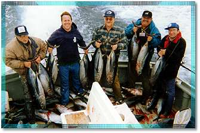
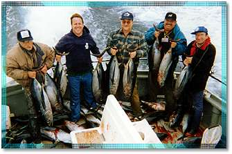
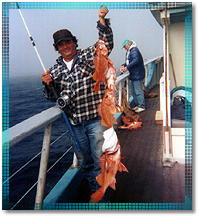

|
|
 

|
The Monterey Bay offers a diversity of fish all year round. Our feature fishing trips are for sand dab, salmon, cod, and albacore. Details are further down on the page, so keep reading! Details on equipment rentals and prices can be found at the bottom of this page. Note: If you do not see a trip on a specific date you are looking for on our online ticketing page, please call us at 831-427-2334.
|
|
|||||||||
|
Santa Cruz Salmon Fishing Trip Check availability and buy tickets online for: Season: April to September 6, 2010 Check-in is at 5:30 am, approx. return is at 2:00 pm. |
|  |
Check availability and buy tickets online for:
Season: May through December
Check-in is at 6:00 am, approx. return is at 1:30 pm.
Santa Cruz Twilight Cod Fishing Trip Check availability and buy tickets online for: Season: May through September
Check availability and buy tickets online for: Season: May through September Check-in is at 5:30 or 6:00 am (dependant upon trip), approx. return is approx. 10:00 am. |
 |
Santa Cruz Albacore Fishing Trip Check availability and buy tickets online for: Season: July through November
|
Rentals and Gear
Rod & Reel Rental....$12.00 / Twilight Trips & Sand Dab $9.00
Purchase Tackle Kit....$8.00 / Twilight Trips & Sand Dab $5.00
1 Day Fishing License & Holder...$15.00
- Expert fish cleaning available All prices include city taxes & harbor fees Gratuities for crew are not included in prices Prices subject to change. All trips weather permitting
- Visa/MasterCard/American Express accepted
The Velocity is located on "F-Dock" in the lower Santa Cruz Yacht Harbor.
For GPS assitance use 789 Mariner Park Way, Santa Cruz, CA

Or call Zerve at 800.979.3370 or 212.209.3370.
Advance purchase highly recommended. Trips often sell out in advance. |
|
|
Copyright © 2000-2010 Stagnaros. All Rights Reserved